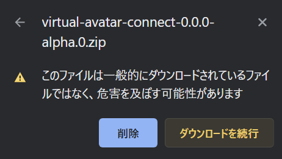
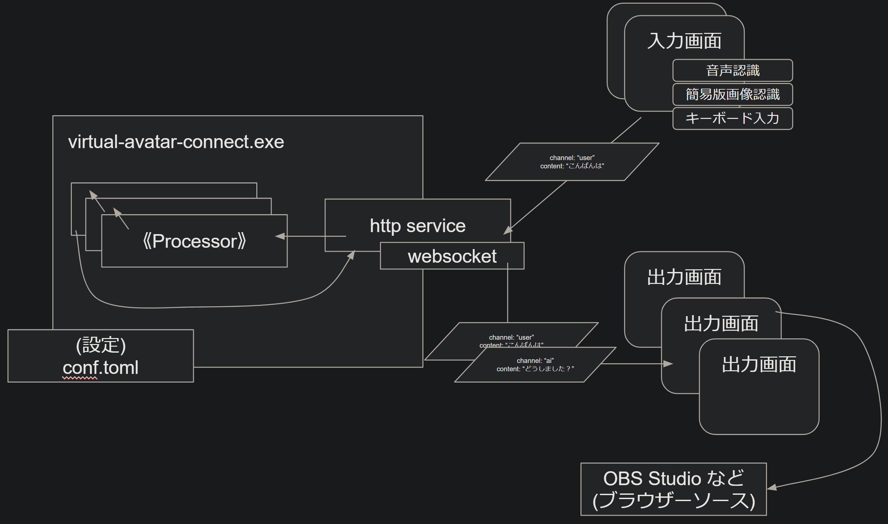
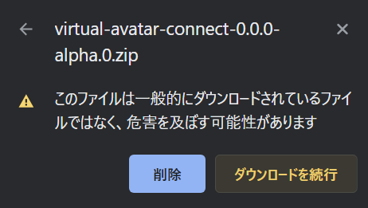
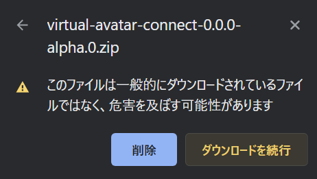

Virtual Avatar Connect 公式サイト
配信支援アプリ、AI疑似人格共演者、VRM制御、音声認識、画像認識、字幕、翻訳、読み上げなどなど
ただいま現在進行系でこの公式ウェブサイトを作成しています。まずは使い方の例、ダウンロードや設定方法などの解説情報を最優先で作成いたします。
いましばらく、公式ウェブサイトの見栄えが塩辛めの状態となりますが、近日中に映えデザインにアップデートいたします。なかのひとのリソース（＆なかのひともゲーム遊びたい都合🤣）ご理解頂ければ幸いです。
🤔このアプリは何？
Virtual Avatar Connect は「配信支援アプリ」です。おもに Twitch などのライブ配信向けに OBS Studio や Twitch Studio
などの配信アプリでの字幕や画作りを支援するためのアプリです。
もしかしなくてもデスクトップに常駐するイマジナリーふれんず/わいふ/はずばんど/etc.召喚アプリとしても使えるかもしれません。少なくとも開発者さんには想定外の用法でしたが楽しまれて下さい。
「AI疑似人格による共演者の召喚」を行えます。会話したり解説してもらったり。（※OpenAI API 連携）
「音声認識からの文字起こしによるテキスト入力」を行えます。
「画像認識からの文字起こしによるテキスト入力」を行えます。
「音声合成によるテキストの読み上げ」を行えます。（※CoeiroInk 、棒読みちゃん 、OSのTTS機能 との連携）
「言語の翻訳」を行えます。（※Google Apps Script 連携）
「字幕の表示」を行えます。
「OBS Studio などの配信画面作りのソースとしての画作り」を行えます。(ブラウザーソース)
「シーン切り替えもできなくはないです。」（Play/BRB/Loadingの切り替え機能サンプルは作ってみた。）
📅今後の機能追加の予定
入力に応じて画面にエモートを乱舞させたり、チャットをかっこよくシュッと表示したりなどの絵作りテンプレートの充実
入力画面のきれい、かわいい、かっこいい、あるいは機能的で便利なスキンの充実
コメントリーダーアプリとの連携、またはアプリ内蔵機能としてTwitchのチャット取り込みに対応。
VMCプロトコルに対応しVRM表示アプリへ姿勢や表情を送信可能に。（疑似人格共演者に動きをつけたり、複数のVMCアプリの入力をうまい具合に合成して自分のアバターへ出力したり。）
OpenAI API に頼らない疑似人格バックエンドの対応。（GPT4かせめてGPT3.5なみのPCのGPUで動かせる何かがあれば…）
外部アプリ、サービス、OS機能との自由度の高い連携の仕組みの追加。（任意のコマンドを音声から実行させるとか）
📂ダウンロード
📖使い方
とりあえず簡易版の使い方ガイドを掲載します。きれいでかっこいいやつは数日…お待ち下さい。🙏
🎨スクショ
ただいま撮影準備中です🙇🏼♀️（雰囲気は開発のなかのひとの Twitch
配信 で見られるかもしれません👀）
🚧開発プロジェクト
VACはMITライセンスのオープンソースソフトウェアです。開発にご協力頂ける方は GitHub ( https://github.com/usagi/virtual-avatar-connect ) へどうぞ！
※不具合報告やご要望は GitHub の Issues へ頂ければ幸いです。🙇🏼♀️
🔼 🔽
†1: 例えばこういうファイルです:
†2: お使いのブラウザによっては「ブロック・一般的ではないファイル」または他の警告が表示され、ファイルのダウンロードに追加の操作が必要な場合があります。右上の方にある小さな▶をクリックすると「ダウンロードを続行」できます。
⇨

†3:
デスクトップやマイドキュメントでも構いませんし、"C:\Virtual-Avatar-Connect"や"D:\ProgramData\Virtual-Avatar-Connect"でも構いません。よくわからない場合はとりあえずデスクトップにでも展開して使ってみて下さい。展開されたファイル中の
"virtual-avatar-connect.exe" が VAC の実行ファイルです。お好みでショートカットも作成してお使いになると便利かもしれません。
お使いの環境によっては .exe の部分が表示されていないかもしれません。ファイルの拡張子を表示する方法 などで検索してお使いの環境でのファイル操作についてお調べ下さい。🙏）
🔼 🔽
手順
2-1. "virtual-avatar-connect.exe" を直接、またはお好みで作成したショートカットなどから起動します。
2-2. ブラウザーで標準の入力画面 http://127.0.0.1:57000/input
または標準の出力画面 http://127.0.0.1:57000/output にアクセスします。
2-3. それらしい画面が表示されていれば動作確認は成功です。
2-4. 初期状態の設定ファイルでは《コマンド》プロセッサーを含むすべてのプロセッサーが無効化されているため、何か素敵な方法でVACを終了させる手段はありません。VAC本体が動作している"クロイガメン"で CTRL + C
キーを押すか、それが動作しているウィンドウの閉じるボタンを押して VAC を終了させましょう。
2-5. (2-2.)で表示した入力画面または出力画面をリロードして、表示されなくなっていれば VAC は終了できています。
参考:
設定ファイルや必須フォルダーの構成に問題がなく無事に起動に成功すると、②のような "クロイガメン" が表示されます。
環境によってはウィンドウの枠などの様子が異なるかもしれません。
初期配布に付属の設定では前回までの動作状態の一部が保存される設定になっていますが、初回起動時はまだファイルが存在しないため "WARN"
（警告）が表示されますが、問題ありません。
🔼 🔽
手順
3-1. VAC を起動します。
3-2. ブラウザーのウィンドウまたはタブへ標準の入力画面 http://127.0.0.1:57000/input を開きます。
3-3. ブラウザーの別のウィンドウまたはタブへ標準の出力画面 http://127.0.0.1:57000/output を開きます。
3-4. 入力画面の上部の「音声認識(１回)」のチェックを ON にします。†1†2
3-5. マイクなどから音声を認識すると認識されたテキストが1回だけ表示されます。
3-6. 認識されたテキストが表示された入力欄の右側にある「POST」ボタンを押すとテキストを VAC へ入力できます。†3†4
†1: 「音声認識(1回)」は ON にすると1回(1文)だけ音声認識が動作します。音声から認識されたテキストは横長の部分に表示されます。
†2: 初めて音声入力へアクセスする際にブラウザーがマイクの使用許可を表示する場合があります。許可すると音声入力が可能になります。
⇨
音声入力を行う言語を変更したい場合は「認識言語」の入力欄を "ja-JP" から "en-US" や "fr-FR" に変更します。（言語と地域のコードはISO396 とISO3166 の組み合わせです。）
†3
手順では紹介していませんが「音声認識(常時)」を ON にした場合は OFF にするまでずっと音声を認識し続けます。
動作試験や、特定のタイミングでのみ音声入力したい場合は「音声認識(1回)」を使い、配信中に全自動で入力し続けたい場合などは「音声認識(常時)」を使うと便利です。
†4
また、「認識結果を自動入力」を ON にすると、認識されたテキストが自動的に VAC チャンネルへ送信されるようになります。手動で送信したい場合は POST ボタンを使用します。
初期状態では送信先のチャンネルは user が設定されています。入力画面からの送信先は POST ボタンの左側の入力欄から任意に送信先のチャンネルを変更できます。
VAC は入力画面などから入力された《コンテント》を《チャンネル》へ流し、《プロセッサー》で処理し、出力画面や音声合成エンジンへ送出します。
出力画面では特定の《チャンネル》の《コンテント》を表示できます。手順にはありませんが、ここで試したくなった場合は出力画面を表示した状態で、
入力画面の POST ボタンの左側の送信先チャンネル設定を title あるいは description に変更した状態でテキストを送信してみましょう。👀
🔼 🔽
手順
4-1. VAC を起動します。
4-2. ブラウザーのウィンドウまたはタブへ標準の入力画面 http://127.0.0.1:57000/input を開きます。
4-3. ブラウザーの別のウィンドウまたはタブへ標準の出力画面 http://127.0.0.1:57000/output を開きます。
4-4. 入力画面の下部の「画像認識(１回)」のチェックを ON にします。†1
4-5. 文字が写るスクショをクリップボードへ撮影し（Windows:Win+Shift+S ）、
入力画面の "Paste or Drop image here -> Recognize the Text" と書かれたあたりへ貼り付け（Windows:CTRL+V ） します。
認識されたテキストが1回だけ表示されます。†2
4-6. 認識されたテキストが表示された入力欄の右側にある「POST」ボタンを押すとテキストを VAC へ入力できます。
†1:「画像認識(１回)」のチェックを ON にした状態の入力画面の画面下部の画像認識機能の様子。
†2: 画像認識でテキストが認識完了した状態の様子。(この例で使ったのは Arknights
というゲームのとあるイベントの会話の一節です。)
VACの標準の入力画面でのお手軽ばーじょんの画像認識機能では、画像の「クリップボードからの貼り付け」と「ファイルのドラッグ・アンド・ドロップによる貼り付け」に対応しています。
プレイ中のゲーム画面からスクショをさっとクリップボードへ撮影し、クリップボードからそのまま VAC へ貼り付けられるようになっています。
読み方のわからない漢字やことばをテキスト化して検索しやすくしたり、VAC へ入力して AI 疑似人格に調べて貰ったり、音声合成で読み上げて貰ったり、とっさに使えて便利かもしれません。
あらかじめ認識させたい「ウィンドウのタイトル」や「会話などで繰り返し表示される文字がでてくる領域」がある場合は、
次の【使い方 5. 「画像認識」→（テキスト）→「テキスト表示」 // プロセッサー編】で紹介する「プロセッサー版」の画像認識機能を使うと便利な場合もあります。
もし、画像認識の結果が悪い場合は、認識させたい文字の言語が「認識言語」の入力欄に設定されているか確認して見て下さい。
日本語なら "jpn" 英語なら "eng" フランス語なら "fra" のように設定します。この機能の言語コードの一覧は「lang code」と書かれたリンクをクリックすると表示できます。
🔼 🔽
今回は 《Screenshot》 Processor と 《OCR》 Processor を使用します。Processor は VAC に内蔵された入力と出力の間で流れる内容を変換したり、調整したりする主要な仕組みです。
Processor を自由に組み合わせることでお好みのカスタム設定でVACを楽しめます。
†1: テキストエディターを使います。特に普段使っているテキストエディターが無い場合は、Windows の「メモ帳」 でファイルを編集できれば十分です。
†2: 成功するとウィンドウから撮影されたスクショが "ss.png" として保存され、この画像から認識されたテキストが標準の出力画面のサブタイトル的な部分に表示されます。
⇨
少し惜しい感じになる場合もありますが、画像からの文字列認識は必ず人間が読めるように読み取れるとは限りません。いまのところ「だいたいうまくが」くらいには成功しますので、便利な使い所を見つけてみて下さい。
《Screenshot》 Processor にはウィンドウ内の特定の領域だけをスクショする設定、1度の実行で複数の領域のスクショを撮影する設定などがあります。
詳しくは「使い方 X. ふろく: VAC の仕組みと用語」の Processor の 《Screenshot》 の項目をご覧下さい。
《OCR》 Processor にはウィンドウ内の特定の領域だけをスクショする設定、1度の実行で複数の領域のスクショを撮影する設定などがあります。
詳しくは「使い方 X. ふろく: VAC の仕組みと用語」の Processor の 《OCR》 の項目をご覧下さい。
🔼 🔽
今回は 《OS-TTS》 Processor を使用します。Processor は VAC に内蔵された入力と出力の間で流れる内容を変換したり、調整したりする主要な仕組みです。
Processor を自由に組み合わせることでお好みのカスタム設定でVACを楽しめます。
《OS-TTS》は Windows 11 などの OS に標準で付属している音声合成エンジンを使用してテキストを音声に変換します。
OSが対応していれば追加のソフトウェアなしで使用でき、多くの言語の音声合成に対応しています。
英語をはじめとする多言語の音声を使用したい場合におすすめです。
もちろん日本語の音声も合成できますが、OSによっては少し不自然でぎこちないかもしれません。
手順
6-1. 《OS-TTS》のシンプルな設定例の設定ファイル "conf.example-os-tts.toml" を "virtual-avatar-connect.exe" へドロップして VAC を起動してみましょう。
コマンドラインでは `./virtual-avatar-connect conf.example-os-tts.toml` です。コマンドラインでの使い方は `--help` で確認できます。
この設定ファイル "conf.example-os-tts.toml" の中身はこうなっています。👀
6-2. ブラウザーのウィンドウまたはタブへ標準の入力画面 http://127.0.0.1:57000/input を開きます。
6-3. ブラウザーの別のウィンドウまたはタブへ 2-ch-mix 出力画面 http://127.0.0.1:57000/output/2-ch-mix#user-ja`user-en
を開きます。
2-ch-mix など出力画面についてもっと知りたい場合は「使い方 12.
「出力画面」の作り込み」 で紹介するので御覧ください。
6-4. 入力画面の上または下、今回はどちらでもよいので送信先のチャンネルを user-ja に設定します。
6-5. 入力内容に「こんにちは、VAC！」のように適当なメッセージを書きます。
6-6. 送信チャンネルを設定した隣にある POST ボタンを押します。音声合成と再生が行われ、ついでに出力画面にも表示されます。
6-7. 入力画面の上または下、今回はどちらでもよいので送信先のチャンネルを user-en に設定します。
6-8. 入力内容に「Hello, VAC!」のように適当なメッセージを書きます。
6-9. 送信チャンネルを設定した隣にある POST ボタンを押します。音声合成と再生が行われ、ついでに出力画面にも表示されます。
お使いの環境で《OS-TTS》から使用できる音声合成の一覧を確認したい場合は、コマンドラインで `./virtual-avatar-connect --test-os-tts`
を実行すると表示とサンプル音声の再生が行われます。また version 0.2.0 からは http://127.0.0.1:57000/status
へアクセスすることでも《OS-TTS》の音声合成の一覧を確認できます。
Windows 11の場合は設定 時刻と言語 > 音声認識 から音声合成エンジンの管理を行えます。使いたい言語の音声パッケージを導入しましょう。
VIDEO
🔼 🔽
今回は 《CoeiroInk》 Processor を使用します。Processor は VAC に内蔵された入力と出力の間で流れる内容を変換したり、調整したりする主要な仕組みです。
Processor を自由に組み合わせることでお好みのカスタム設定でVACを楽しめます。
《CoeiroInk》は
https://coeiroink.com/ で公開されている「無料で使えるAIトークソフト」です。
日本語の音声合成が得意でとてもなめらかな音声をたくさんのキャラクターをベースに調整して利用できます。
《OpenAI-Chat》プロセッサーでAI擬似人格共演者を実現したい場合におすすめの音声合成エンジンです。
《MODify》プロセッサーでよみがな化すれば英語のコンテントも一応対応可能になります。
手順
7-1. CoeiroInk の準備 (導入済みの場合は飛ばして次へどうぞ)
https://coeiroink.com/ の「ダウンロード」から CoeiroInk をダウンロードしてお使いの環境に導入します。
できるだけリアルタイムに応答を得たい方は「GPU版」を使うとよいです。
7-2. CoeiroInk を起動した状態で CoeiroInk の API が使用可能な状態か確認する http://127.0.0.1:50032/ にアクセスして
{"status":"start"} と表示される状態を確認します。
7-3. 《CoeiroInk》のシンプルな設定例の設定ファイル "conf.example-coeiroink.toml" を "virtual-avatar-connect.exe" へドロップして VAC
を起動してみましょう。
コマンドラインでは `./virtual-avatar-connect conf.example-coeiroink.toml` です。コマンドラインでの使い方は `--help` で確認できます。
この設定ファイル "conf.example-coeiroink.toml" の中身はこうなっています。👀
7-4. ブラウザーのウィンドウまたはタブへ標準の入力画面 http://127.0.0.1:57000/input を開きます。
7-5. ブラウザーの別のウィンドウまたはタブへ 2-ch-mix 出力画面 http://127.0.0.1:57000/output/2-ch-mix#default`genki
を開きます。
2-ch-mix など出力画面についてもっと知りたい場合は「使い方 12.
「出力画面」の作り込み」 で紹介するので御覧ください。
7-6. 入力画面の上または下、今回はどちらでもよいので送信先のチャンネルを default に設定します。
7-7. 入力内容に「こんばんは、こちらはデフォルトの音声です。」のように適当なメッセージを書きます。
7-8. 送信チャンネルを設定した隣にある POST ボタンを押します。音声合成と再生が行われ、ついでに出力画面にも表示されます。
7-9. 入力画面の上または下、今回はどちらでもよいので送信先のチャンネルを user-en に設定します。
7-10. 入力内容に「元気スタイルです。もし長い文章が入力されても、短い単位に区切って合成し、読み上げながら逐次並行して次の単位を合成することでリアルタイム性をある程度維持できます。」のように適当なメッセージを書きます。
7-11. 送信チャンネルを設定した隣にある POST ボタンを押します。音声合成と再生が行われ、ついでに出力画面にも表示されます。
お使いの環境で《CoeiroInk》で使用できる音声合成の話者やスタイルの一覧を確認したい場合は、コマンドラインで `./virtual-avatar-connect --coeiroink-speakers`
を実行すると確認できます。また version 0.2.0 からは http://127.0.0.1:57000/status
へアクセスすることでも《CoeiroInk》の音声合成の一覧を確認できます。
🔼 🔽
今回は 《Bouyomichan》 Processor を使用します。Processor は VAC に内蔵された入力と出力の間で流れる内容を変換したり、調整したりする主要な仕組みです。
Processor を自由に組み合わせることでお好みのカスタム設定でVACを楽しめます。
手順
8-1. 棒読みちゃん の準備 (導入済みの場合は飛ばして次へどうぞ)
https://chi.usamimi.info/Program/Application/BouyomiChan/ からダウンロードしてお使いの環境に導入し起動します。
8-2. 棒読みちゃんを配置したフォルダーの中の RemoteTalk フォルダーに入っている RemoteTalk.exe までのパスを確認します。(設定に必要になります。)
例: C:\Program Files (x86)\BouyomiChan\RemoteTalk\RemoteTalk.exe
8-3. 《Bouyomichan》のシンプルな設定例の設定ファイル "conf.example-bouyomichan.toml" の remote_talk_path に (8-2.) で確認した
RemoteTalk.exe までのパスを設定します。
version 0.2.0 以前のダウンロード用パッケージには "conf.example-bouyomichan.toml" は同梱されていません。必要に応じて作成または、https://github.com/usagi/virtual-avatar-connect/blob/main/conf.example-bouyomichan.toml からダウンロードしてご用意下さい。
8-4. 《Bouyomichan》のシンプルな設定例の設定ファイル "conf.example-bouyomichan.toml" を "virtual-avatar-connect.exe" へドロップして VAC
を起動してみましょう。
コマンドラインでは `./virtual-avatar-connect conf.example-bouyomichan.toml` です。コマンドラインでの使い方は `--help` で確認できます。
この設定ファイル "conf.example-bouyomichan.toml" の中身はこうなっています。👀
8-5. ブラウザーのウィンドウまたはタブへ標準の入力画面 http://127.0.0.1:57000/input を開きます。
8-6. 入力画面の上または下、今回はどちらでもよいので送信先のチャンネルを user に設定します。
8-7. 入力内容に「こんばんは、棒読みちゃん。」のように適当なメッセージを書きます。
8-8. 送信チャンネルを設定した隣にある POST ボタンを押します。音声合成と再生が行われ、ついでに出力画面にも表示されます。
《Bouyomichan》で設定できる主なパラメーターは次の通りです。
voice … 0:デフォルト 1:女性1 2:女性2 3:男性1 4:男性2 5:中性 6:ロボット 7:機械1 8:機械2 9以降:SAPI
speed … -1:デフォルト 50:最低 300:最高
tone … -1:デフォルト 50:最低 200:最高
volume … -1:デフォルト 0:最低 100:最高
🔼 🔽
今回は 《GAS-Translation》 Processor を使用します。Processor は VAC に内蔵された入力と出力の間で流れる内容を変換したり、調整したりする主要な仕組みです。
Processor を自由に組み合わせることでお好みのカスタム設定でVACを楽しめます。
手順
9-1. Google Apps Script の準備 (翻訳用のGASを作成済みの場合は飛ばして次へどうぞ)
9-1-1. https://script.google.com/ にアクセスして「新しいプロジェクト」を作成します。
9-1-2. 以下のコードを貼り付けて「プロジェクトを保存」(💾謎の古代の保存媒体のアイコンを押します)
9-1-3. 「デプロイ」→「新しいデプロイ」
9-1-4. 「種類の選択 ⚙」（この⚙のところをクリック）→「ウェブアプリ」
9-1-5. 「次のユーザーとして実行」が「自分」になっている事を確認
9-1-5. 「アクセスできるユーザー」を「全員」に変更
9-1-6. 「デプロイ」→「デプロイID」（= Script ID）をコピーして取得
以上のGAS翻訳サービスの作り方は「音声認識字幕ちゃん」 を100%参考にさせて頂いています。先人に感謝いたします。🙏
9-2. 《GAS-Translation》のシンプルな設定例の設定ファイル "conf.example-gas-translation.toml" の script_id に (9-1.) で取得した
GAS の Script ID を設定します。または、 Script ID の不慮の漏出に注意したい場合は環境変数 VAC_GAS_TRANSLATION_SCRIPT_ID に GAS の
Script ID を設定しても動作します。お好みの方法で Script ID を設定して下さい。
version 0.2.0 以前のダウンロード用パッケージには "conf.example-gas-translation.toml" は同梱されていません。必要に応じて作成または、https://github.com/usagi/virtual-avatar-connect/blob/main/conf.example-gas-translation.toml からダウンロードしてご用意下さい。
9-3. 《GAS-Translation》のシンプルな設定例の設定ファイル "conf.example-gas-translation.toml" を "virtual-avatar-connect.exe" へドロップして
VAC を起動してみましょう。
コマンドラインでは `./virtual-avatar-connect conf.example-gas-translation.toml` です。コマンドラインでの使い方は `--help` で確認できます。
この設定ファイル "conf.example-gas-translation.toml" の中身はこうなっています。👀
9-4. ブラウザーのウィンドウまたはタブへ標準の入力画面 http://127.0.0.1:57000/input を開きます。
9-5. ブラウザーの別のウィンドウまたはタブへ 2-ch-mix 出力画面 http://127.0.0.1:57000/output/2-ch-mix#user;;[日本語]`user-en;;[English]
を開きます。
2-ch-mix など出力画面についてもっと知りたい場合は「使い方 12.
「出力画面」の作り込み」 で紹介するので御覧ください。
9-6. 入力画面の上または下、今回はどちらでもよいので送信先のチャンネルを user に設定します。
9-7. 入力内容に「この入力内容は日本語から英語に自動的に翻訳されます。」のように適当なメッセージを書きます。
9-8. 送信チャンネルを設定した隣にある POST ボタンを押します。音声合成と再生が行われ、ついでに出力画面にも表示されます。
成功すると 2-ch-mix 出力画面は以下のような字幕が出力されます。
🔼 🔽
今回は 《OpenAI-Chat》 Processor を使用します。Processor は VAC に内蔵された入力と出力の間で流れる内容を変換したり、調整したりする主要な仕組みです。
Processor を自由に組み合わせることでお好みのカスタム設定でVACを楽しめます。
《OpenAI-Chat》は ChatGPT や DALL-E でお馴染みの OpenAI が提供する AI サービスをVAC連携で使用可能にするプロセッサーです。
PCに強力なGPUを搭載しても得難い超高度な AI を簡単に組み込めます。かわりに使いたい分だけ先払い制でお金がかかります。
アカウント登録時に無料で18USD分のクレジットを貰えます。《OpenAI-Chat》のお試しには十二分な量なのでぜひ試してみて下さい。
ですます調で丁寧な受け答えのキャラクターなら安価で高速な「GPT3.5-Turbo」モデルで十分 です。こちらを使う場合には毎分1回応答させながら3時間程度ゲームプレイ配信しても0.06USD程度の使用料金です。もっと長時間使った場合でも、1000円の先払いで3ヶ月前後使えるかもしれません。
個性の強いキャラクターを作るには比較的高価な「GPT4」モデルが必要 です。こちらを使う場合は《OpenAI-Chat》の設定で応答を10分間隔＋キーワード応答に絞った運用で3時間程度のゲームプレイ配信で1.25USD程度の使用料金になります。こちらを使う場合は慎重に応答頻度の調整が必要です。
手順
10-1. OpenAI API の準備 (OpenAI API に登録済みの場合は飛ばして次へどうぞ)
10-1-1. https://openai.com/ にアクセスして "Log in↗" をクリックします。
10-1-2. "Don't have an accout? Sign up" から "Sign up" をクリックします。
10-1-3. https://platform.openai.com/account/usage でAPI のクレジット残高を確認します。
10-1-4. もし使用可能なクレジットが無ければ https://platform.openai.com/account/billing/overview の "Add to
credit balance" からクレジットを購入します。
10-1.5. https://platform.openai.com/account/api-keys で "Create new secret key" から API KEY
を作成します。
OpenAIの"ChatGPT"と"API"は別のサービスで支払いも共有されません。OpenAIの有料サービスに初めて登録する方は気をつけて下さい。《OpenAI-Chat》に必要なサービスは"API"のみです。
10-2. 《OpenAI-Chat》のシンプルな設定例の設定ファイル "conf.example-openai-chat.toml" の api_key に (10-1.) で取得した
OpenAI の API KEY を設定します。または、 API KEY の不慮の漏出に注意したい場合は環境変数 VAC_OPENAI_CHAT_API_KEY に OpenAI の
API KEY を設定しても動作します。お好みの方法で API KEY を設定して下さい。
version 0.2.0 以前のダウンロード用パッケージには "conf.example-openai-chat.toml" は同梱されていません。必要に応じて作成または、https://github.com/usagi/virtual-avatar-connect/blob/main/conf.example-openai-chat.toml からダウンロードしてご用意下さい。
10-3. 《OpenAI-Chat》のシンプルな設定例の設定ファイル "conf.example-openai-chat.toml" を "virtual-avatar-connect.exe" へドロップして
VAC を起動してみましょう。
コマンドラインでは `./virtual-avatar-connect conf.example-openai-chat.toml` です。コマンドラインでの使い方は `--help` で確認できます。
この設定ファイル "conf.example-openai-chat.toml" の中身はこうなっています。👀
《OpenAI-Chat》にはたくさんの設定項目があります。
AIの広範な知識からの回答を得られる助手を召喚したいだけならサンプルの設定だけでも十分に楽しく、あるいは役立つよう動作してくれます。
もっと高度な設定や疑似人格形成を行いたい場合はひとまず付属の conf.toml でコメントされている設定を参考にしてみてください。
実際に開発のなかのひとが Twitch で配信する際に疑似人格ケルシー先生を構成するために使っている設定です。
特に custom_instructions に疑似人格形成のための設定を書くことで、さまざまなAIキャラクターを構成できます。
また、memory_capacity(応答ごとに過去何件分の記憶を擬似的に保持させるか), min_interval_in_secs(応答間隔), force_activate_regex_pattern(強制応答パターン),
ignore_regex_pattern(無視パターン) などを適切に設定して AI の応答頻度を調整することも特に GPT4 を使う場合には大事です。
他にも temperature, top_p, n, presence_penalty, frequency_penalty, max_tokens, user などの OpenAI API
が受け取れるパラメーターは設定可能にしてあります。
10-4. ブラウザーのウィンドウまたはタブへ標準の入力画面 http://127.0.0.1:57000/input を開きます。
10-5. ブラウザーの別のウィンドウまたはタブへ 2-ch-mix 出力画面 http://127.0.0.1:57000/output/2-ch-mix#user;;[日本語]`ai;;[AI]
を開きます。
2-ch-mix など出力画面についてもっと知りたい場合は「使い方 12.
「出力画面」の作り込み」 で紹介するので御覧ください。
10-6. 入力画面の上または下、今回はどちらでもよいので送信先のチャンネルを user に設定します。
10-7. 入力内容に「この入力内容は日本語から英語に自動的に翻訳されます。」のように適当なメッセージを書きます。
10-8. 送信チャンネルを設定した隣にある POST ボタンを押します。音声合成と再生が行われ、ついでに出力画面にも表示されます。
成功すると 2-ch-mix 出力画面は以下のような字幕が出力されます。
ちなみに、2-ch-mixは基本的には同じ発言者の元の内容と翻訳の字幕を出力するように作られています。実際にAI疑似人格と配信を行う際には画面の左右でそれぞれ2-ch-mixを使ったり、上下に吹き出しを出す独自の出力画面を作ったりするとよいかもしれません。
🔼 🔽
今回は 《MODify》 Processor を使用します。Processor は VAC に内蔵された入力と出力の間で流れる内容を変換したり、調整したりする主要な仕組みです。
Processor を自由に組み合わせることでお好みのカスタム設定でVACを楽しめます。
《MODify》は音声合成エンジンの直前に入れて、音声合成エンジンが読み間違えてしまう単語を読み間違えの無いようひらがなに変換する前処理や、
《OCR》の結果から頻出する誤認識を修正したり、配信の字幕やAIの入力に使いたくない単語を伏せ字にしたり、地味に活躍するプロセッサーです。
成功すると 2-ch-mix 出力画面は以下のような字幕が出力されます。
《MODify》の alkana はそこそこの単語をカタカナにしてくれますが、意外と未登録の単語も多いので、もっとしっかりとカタカナにしたい場合は
dictionary_files に辞書ファイルを追加してみて下さい。辞書ファイルは「Google 日本語入力」の辞書をエクスポートした.txtファイルも読み込めます。
また、単純な辞書による置換では対応が難しい場合は regex_files に正規表現ファイルを追加してみて下さい。
🔼 🔽
VACの「出力画面」"群"は OBS STUDIO などの配信アプリで表示することを想定した画面です。
VACの「出力画面」は「ブラウザーソース」での取り込みを想定しています。
VACの「出力画面」は複数作成できます。
VACの「出力画面」は一般的な HTML + CSS + JS や WASM でユーザーが独自に作り込めます。
これまでの使い方に登場した標準の出力画面や2-ch-mix出力画面はVACを用いた画面作りのサンプルを兼ねています。ご自由に改変して自分だけの配信画面を作って頂いて構いません。👀
VAC本体からのチャンネル出力情報はRESTまたはWebSocketで受信でき、両方に対応した簡単なライブラリーもサンプルに含まれています。
おわかりになる方はその辺りから作り込んで頂いても構いませんし、 Vue.js や React などのフレームワークを使っても構いません。
もちろん、素のHTMLやCSS、JS、WASMでサンプルを少しずつ改造したり、コピペしてアレンジ版を作るところから始めるのもよいと思います。
配布状態の出力画面の構成
.html ソースの場所
動作中のURL
概要
output/index.html
http://127.0.0.1:57000/output
標準の出力画面、サンプルでは16:9で画面いっぱいにオーバーレイされる想定でさしあたりタイトルと副題を VAC の title, description チャンネルを受信して更新できるようになっています。
また、出力画面単独でのシーン切り替えのサンプルも含まれていて、画面のクリックで BRB 画面へ切り替えられ、 BRB 画面でも brb チャンネルを受信して状況表示を更新できる仕組みになっています。
ほかに loading シーンの素っ気ないレンプレートも含まれているので、出力画面単独でシーン切り替えしたくなったら参考にして下さい。
output/2-ch-mix.html
http://127.0.0.1:57000/output/2-ch-mix
上下に積み重なるように VAC から受信した2つのチャンネルを表示するパーツ単位の出力画面のサンプルです。
表示する際にURLフラグメントでパラメーターを指定できるように仕込んであります。
例えば /output/2-ch-mix#user;;[Dr.USAGI]`user-en;;[Dr.USAGI(transEN)] のようにURLフラグメントを付けて開くと、
user チャンネルと user-en チャンネルを [Dr.USAGI] と [Dr.USAGI(transEN)] という話者表示のプリフィックス付きで表示します。
他にも文字色の指定、C.V.表示などを行う想定のサフィックス表示にも対応しています。詳しくはソース冒頭の解説をどうぞ。
output/*.html
http://127.0.0.1:57000/output/*
2-ch-mixと同様に、 output/ に .html ファイルがあれば VAC は出力画面として読み込めるように扱います。
例えば、 my-out1.html というファイルを作成して output/ へ配置すれば、 http://127.0.0.1:57000/my-out1 という出力画面として動作します。
少し下で紹介する「配布状態のVAC出力画面向けAPIの簡単な使い方」なども参考に、自分だけの出力画面を作り込んで下さい。
resources/**/*
http://127.0.0.1:57000/resources/**/*
ソースのoutput/ は .html ファイルのみを扱います。他に出力画面から参照させたいファイルがある場合は resources/ へ配置します。
resource/ は出力画面、入力画面いずれからも共通でアクセスできるファイル置き場です。
主に CSS, js, wasm, 画像, 音声, 動画などのファイルを配置して使います。
配布状態のVAC出力画面向けAPIの簡単な使い方（一般的におすすめ）
出力画面用の .html に script 要素を追加して type="module" で src="resources/js/output.js" をロードします。
チャンネルから受信した内容を表示したいHTML要素を作り data-vac-output="title" のように受信したいチャンネルを指定します。
.html に script 要素を追加して document.addEventListener('DOMContentLoaded', () => vac.output.run()) とおまじないを書きます。
出力画面からもっと細かく API を使いたい場合は resources/js/output.js や resources/js/api.js を参考にするとよいかもしれません。👀
VAC本体から直接チャンネル出力情報を取得する使い方（⚠️高度な応用をしたい方向け）
WebSocket: ws://127.0.0.1:57000/ へ接続し、受信した payload を JSON デコードします。
REST: http://127.0.0.1:57000/output に POST で body に OutputRequestPayload 構造体を JSON 形式で入れて投げ、応答から JSON 化された
OutputResponsePayload を受け取ります。
🔼
VACの仕組み
すごーく大雑把に描くとだいたい下図のような具合になっています。

VACはWebインターフェースとしてWebSocketを含むHTTPdを内蔵していて、ユーザーからの入力画面やOBS STUDIOなどへの出力画面はWebインターフェースを通して行います。
VAC内部では設定ファイルで定義された《Processor》群を、設定で定義された分だけそれぞれ実体化して入力を待ち受けます。
チャンネルへコンテントの入力が行われると、そのチャンネルを処理対象(channel_from)とした《Processor》が設定で上の方で定義された順に入力を処理します。
《Processor》は入力を加工したり、入力に応じてバックエンドAPIを呼び出して新たなコンテントを生成したりします。
《Processor》は出力設定があれば、その出力設定に応じて加工したり生成したりしたコンテントを設定されたチャンネルへ送出します。
もとの入力は通常は次の《Processor》にも流れ、設定ファイルで定義されたすべての《Processor》が入力を同様に処理します。
多くの《Processor》は入力に対する前処理が終わるとメインの処理は非同期処理ブロックへ逃がす作りになっているので、同じチャンネルに《Processor》をたくさん設定してもそこそこ大丈夫かもしれません。(お使いのPCと設定のworkersによります。)
VACの用語
Processor
Processor （プロセッサー）は VAC のチャンネルに流れる内容を受け取り、連携アプリと情報をやり取りしたり、内容を加工したり、別のチャンネルへ出力したりする仕組みです。
Processor はチャンネルごとにお好みの順序で、お好みの設定で繋げて使用できます。
同じ種類の Processor を1度だけ使うことも、繰り返し繋いで使うことももできます。
VACの使い方の解説ではプロセッサーを《Screenshot》のように表記します。設定ファイルで feature = "Screenshot" と書く部分はこの名前を使います。

 ⇨

⇨
